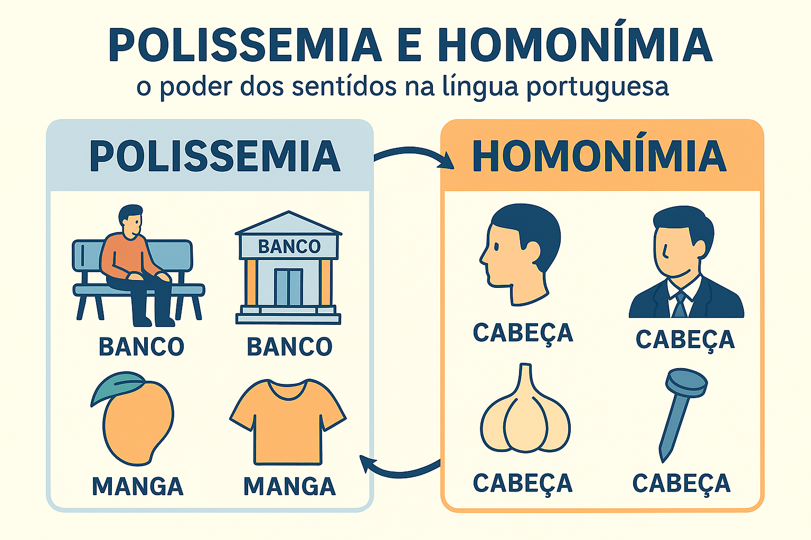

Polissemia e Homonímia: Distinções Teóricas, Desambiguação e Efeitos de Sentido
No funcionamento real das línguas naturais, a relação entre significante (a forma material sonora ou gráfica) e significado (o conceito mental) raramente se dá de maneira biunívoca. Em vez de inventar um vocábulo inteiramente novo para cada novo objeto, sensação ou processo do mundo, as línguas humanas operam pela lei da economia cognitiva. Esse mecanismo dá origem a dois dos fenômenos mais fascinantes e recorrentes da Semântica Lexical: a polissemia e a homonímia.
Embora ambos os fenômenos apresentem na superfície enunciativa uma forma que se desdobra em múltiplos sentidos, seus estatutos histórico, etimológico e mental são radicalmente distintos. Enquanto a polissemia resulta da expansão viva e analógica de uma mesma raiz conceitual ao longo dos séculos, a homonímia decorre do encontro acidental e fortuito de palavras com árvores genealógicas independentes que passaram a coincidir na pronúncia, na grafia ou em ambas.
Compreender com precisão os limites entre a polissemia e a homonímia é indispensável para desvendar as ambiguidades do discurso cotidiano, reconhecer trocadilhos em tirinhas e charges de vestibulares, explorar a expressividade das campanhas publicitárias e interpretar com rigor decisões jurídicas e textos acadêmicos.

Critérios de demarcação: como distinguir polissemia e homonímia
Na tradição da linguística histórica e da lexicografia moderna (ULLMANN, 1982; LYONS, 1977), a demarcação entre esses dois fenômenos assenta-se em três critérios fundamentais:
Polissemia (Pluralidade da Mesma Palavra)
Ocorre quando um único vocábulo abriga múltiplos significados que guardam entre si um elo conceitual evidente (parentesco semântico por metáfora ou metonímia).
Origem Etimológica: Derivam de um mesmo étimo histórico que irradiou novos sentidos pelo uso social.
Nos Dicionários: Registra-se sob uma única entrada de verbete, com as diversas acepções discriminadas por números (1, 2, 3...).
Exemplo: Cabeça (órgão do corpo humano / líder de uma equipe / extremidade de um prego).
Homonímia (Coincidência entre Palavras Distintas)
Ocorre quando dois ou mais vocábulos totalmente diferentes coincidem na pronúncia, na grafia ou em ambas, sem manter qualquer relação de sentido.
Origem Etimológica: Derivam de étimos históricos autônomos que convergiram formalmente por evolução fonética.
Nos Dicionários: Registram-se sob entradas de verbetes separadas, comumente diferenciadas por números sobrescritos (manga¹, manga²).
Exemplo: Manga (fruta, do malaio māṅṅa) versus manga (parte da vestimenta, do latim manica).
A curiosa história da palavra "banco": polissemia histórica
Muitas gramáticas escolares citam apressadamente a palavra banco (assento de praça) e banco (instituição financeira) como exemplo de homonímia. A etimologia, contudo, revela que se trata de uma polissemia clássica. Na Idade Média italiana, os cambistas e agiotas realizavam suas transações financeiras sentados em bancos de madeira (banco) nas feiras públicas. Quando um financista falhava em seus pagamentos, seu banco de madeira era fisicamente quebrado em praça pública — evento que deu origem ao termo bancarrota (banco quebrado). A instituição herdou metonimicamente o nome do móvel sobre o qual operava.
Tipologia das relações de homonímia na Língua Portuguesa
Conforme a dimensão física da linguagem em que se manifesta a identidade formal, os homônimos são classificados em três modalidades rigorosas:
| Modalidade de Homônimo | Realização Fônica (Som) | Realização Gráfica (Escrita) | Pares Exemplares Comentados |
|---|---|---|---|
| Homófonos | Idêntica | Diferente | Sessão (reunião/duração) × Seção/Secção (divisão/departamento) × Cessão (ato de ceder); Cela (quarto/prisão) × Sela (arreio); Cinto (acessório) × Sinto (verbo sentir). |
| Homógrafos (Heterofônicos) | Diferente (timbre de vogal aberta/fechada) | Idêntica | Almoço (substantivo com /ô/ fechado) × Almoço (forma verbal de almoçar com /ó/ aberto); Colher (substantivo com /é/) × Colher (verbo com /ê/); Sede (/ê/ - vontade de beber) × Sede (/é/ - domicílio/matriz). |
| Homônimos Perfeitos | Idêntica | Idêntica | Manga (fruta) × Manga (da camisa); Cura (restabelecimento da saúde) × Cura (pároco/vigário) × Cura (verbo curar); Verão (estação do ano) × Verão (verbo ver no futuro). |
Homônimos versus Parônimos: não confunda semelhança com igualdade!
Enquanto os homônimos apresentam igualdade total em pelo menos uma das dimensões materiais (som ou grafia), os parônimos apresentam apenas semelhança aproximada na escrita e na pronúncia, o que gera frequentes desvios ortográficos na redação:
• Emergir (vir à tona) × Imergir (mergulhar);
• Descriminar (inocentar de crime) × Discriminar (distinguir/segregar);
• Comprimento (extensão métrica) × Cumprimento (saudação ou realização de tarefa).
A mecânica da polissemia: irradiações corporais e cognitivas
A polissemia desenvolve-se predominantemente por meio de processos metafóricos fundamentados na projeção do corpo humano sobre os objetos inanimados do mundo:
- Boca: órgão anatômico de ingestão e fala ("Lave bem a boca") → entrada geográfica ou arquitetônica por analogia visual ("A boca da caverna", "A boca do túnel", "A boca da noite");
- Pé: membro inferior de sustentação e locomoção ("Fraturou o pé esquerdo") → base de apoio de um móvel ou relevo ("O pé da mesa", "O pé da montanha", "O pé da página");
- Braço: membro superior humano articulado ("Exercitou os braços") → prolongamento de terra, água ou maquinário ("Um braço de mar", "O braço mecânico da escavadeira").
O duplo sentido no humor, nas tirinhas e na publicidade
A ambiguidade proporcionada por esses fenômenos semânticos é a principal mola propulsora do humor, da ironia crítica e da eficácia persuasiva:
Análise de Caso: O Duplo Sentido na Tirinha
Em uma tirinha cômica, um personagem entra em um banco comercial com uma vara de pescar. O gerente pergunta surpreso: "O que o senhor pensa que veio fazer aqui?", ao que o cliente responde: "Vim conferir se a minha conta corrente tem peixe graúdo!"
Roteiro de Desconstrução Semântica
- Exploração Polissêmica de "Corrente": O vocábulo corrente desdobra-se entre a acepção financeira bancária (conta de movimentação contínua de depósitos) e a acepção fluvial (fluxo contínuo de água corrente onde vivem peixes);
- Quebra de Expectativa Pragmática: O humor nasce da colisão entre o universo solene das finanças e a literalidade visual da pescaria esportiva, forçando o leitor a conciliar duas matrizes conceituais contrastantes.
Aplicação pedagógica: oficina de análise de trocadilhos e desambiguação
Roteiro de Atividade: Desmontando a Ambiguidade
Para desenvolver a sensibilidade leitora de turmas do Ensino Fundamental e Médio:
- Mapeamento de Manchetes Sensacionalistas: Apresentar manchetes que contenham ambiguidades involuntárias (ex.: "Prefeitura cerca praça com homens armados") e orientar a turma a identificar se o ruído comunicativo decorre de polissemia ou de anfibologia sintática;
- Gincana dos Homófonos: Criar cartões contextuais com lacunas para preenchimento entre termos homófonos desafiadores (chá/xá, cheque/xeque, viagem/viajem, senso/censo), exigindo a justificativa do significado dicionarizado;
- Reescrita Desambiguadora: Propor aos alunos reformular frases ambíguas, eliminando os duplos sentidos para atender às exigências de formalidade e precisão técnica da norma-padrão.
Esquema pedagógico: o itinerário de distinção entre polissemia e homonímia
Árvore de decisão semântico-lexical
Presença de forma coincidente (mesma escrita ou mesma pronúncia) → Investigação do étimo (origem histórica comum ou raízes independentes?) → Exame de parentesco semântico (há metáfora conectando os sentidos ou coincidência acidental?) → Diagnóstico: Se há elo conceitual = Polissemia | Se não há elo algum = Homonímia → Subclassificação dos homônimos (Homófonos, Homógrafos ou Perfeitos).
Questões para estudo e reflexão
Questão 1
Qual é a diferença conceitual e histórica fundamental entre polissemia e homonímia perfeita?
Ver resposta comentada
Resposta comentada: Na polissemia, trata-se de uma única palavra que, a partir de um mesmo étimo histórico, expandiu suas acepções por processos metafóricos ou metonímicos, mantendo um núcleo comum de sentido (ex.: olho da agulha e olho humano). Na homonímia perfeita, temos palavras totalmente diferentes, derivadas de étimos independentes, que por acidente histórico passaram a ter o mesmo som e a mesma grafia, sem nenhum vínculo de significado (ex.: manga fruta e manga de camisa).
Questão 2
Como a lexicografia moderna registra as palavras polissêmicas e as palavras homônimas nos dicionários?
Ver resposta comentada
Resposta comentada: A polissemia é organizada dentro de uma única entrada léxica (um único verbete), subdividindo-se em várias acepções numeradas, indicando que se trata da mesma unidade lexical. A homonímia gera entradas lexicográficas distintas e separadas (frequentemente sinalizadas com índices como são¹, são², são³), demonstrando que se trata de vocábulos independentes.
Questão 3
O que são homônimos homógrafos heterofônicos? Cite dois exemplos consagrados na Língua Portuguesa.
Ver resposta comentada
Resposta comentada: São palavras que compartilham rigorosamente a mesma forma escrita, mas que diferem na pronúncia em razão do timbre aberto ou fechado da vogal tônica. Exemplos clássicos: o substantivo almoço (/ô/ fechado) e o verbo almoço (/ó/ aberto); o substantivo sede (/ê/ fechado - desejo de beber) e o substantivo sede (/é/ aberto - local principal de uma entidade).
Questão 4
Por que os pares "sessão", "seção" e "cessão" provocam dúvidas frequentes na escrita e como se diferenciam quanto ao sentido?
Ver resposta comentada
Resposta comentada: Provocam dúvidas porque são homônimos homófonos (possuem exatamente a mesma realização sonora na fala, mas grafias distintas). Quanto aos sentidos: sessão (com ss) refere-se a um intervalo de tempo, reunião ou espetáculo (sessão de cinema); seção ou secção (com ç) refere-se a corte, divisão, departamento ou repartição (seção eleitoral); cessão (iniciada por c e com ss) deriva do verbo ceder e designa o ato formal de transferir posse ou direitos.
Questão 5
De que maneira o contexto linguístico e pragmático atua para desambiguar palavras polissêmicas na conversação diária?
Ver resposta comentada
Resposta comentada: O cotexto sintático (as palavras vizinhas que integram a frase) e o enquadramento situacional filtram automaticamente os traços semânticos incompatíveis. Em "O atleta quebrou a perna da mesa ao tropeçar", a associação do verbo tropeçar e do complemento mesa descarta imediatamente a leitura de membro humano, ativando na mente do interlocutor unicamente a acepção de suporte do móvel.
Resumo sobre polissemia e homonímia
- A polissemia envolve uma mesma palavra com múltiplos sentidos interconectados por uma matriz comum;
- A homonímia reúne palavras distintas com origens etimológicas autônomas que coincidem na forma superficial;
- Os homônimos subdividem-se em homófonos (mesmo som), homógrafos (mesma grafia) e perfeitos (mesmo som e mesma grafia);
- A paronímia envolve vocábulos que apresentam apenas semelhança sonora e gráfica (não igualdade plena);
- Nos dicionários, palavras polissêmicas constituem um único verbete com acepções, enquanto homônimos formam verbetes independentes;
- A polissemia resulta em grande parte de processos metafóricos fundamentados na experiência corpórea do ser humano;
- Ambos os fenômenos constituem ferramentas expressivas centrais na literatura, no humor, em tirinhas e em peças publicitárias.
Perguntas frequentes sobre múltiplos sentidos
Qual a diferença básica entre polissemia e homonímia?
A polissemia se refere a uma única palavra que adquiriu vários significados relacionados entre si. A homonímia ocorre quando palavras diferentes, com origens históricas distintas, por coincidência possuem a mesma escrita ou a mesma pronúncia.
O que são palavras homófonas?
São palavras que têm exatamente o mesmo som ao serem faladas, mas grafias e significados diferentes, como cela (aposento pequeno) e sela (arreio de montaria).
O que são palavras homógrafas?
São palavras com a mesma grafia na escrita, mas com pronúncias e significados diferentes, como o substantivo jogo (vogal fechada) e o verbo jogo (vogal aberta).
O que é um homônimo perfeito?
É a palavra que tem tanto o som quanto a escrita absolutamente idênticos a outra, mas com sentidos e origens totalmente separados, como manga (fruta) e manga (parte da camisa).
Por que a palavra "cabeça" é polissêmica?
Porque todos os seus múltiplos usos (líder da equipe, parte de cima do prego, cabeça de alho) guardam relação direta de semelhança e analogia com a cabeça anatômica humana (estar no topo, comandar, ter formato esférico).
Qual a diferença entre homonímia e paronímia?
Na homonímia, as palavras são iguais no som ou na escrita. Na paronímia, as palavras são apenas parecidas, como tráfego (trânsito de veículos) e tráfico (comércio ilegal).
A polissemia atrapalha a compreensão dos textos?
Geralmente não, pois o contexto no qual a palavra está inserida resolve a dúvida instantaneamente. Ela só causa problema quando a frase é mal formulada e permite duplo sentido involuntário (ambiguidade).
Como o ENEM costuma cobrar polissemia e homonímia?
O exame cobra esses conceitos por meio da interpretação de tirinhas cômicas, charges políticas, crônicas e anúncios publicitários, avaliando a capacidade do estudante de perceber duplos sentidos, jogos de palavras e ironias críticas.
Considerações finais
A polissemia e a homonímia atestam que as línguas naturais não são códigos mecânicos ou engessados, mas sistemas vivos que respiram a cultura e a imaginação dos seus falantes. A plasticidade das palavras permite condensar séculos de história em pequenos enunciados, transformando significantes corriqueiros em mananciais inesgotáveis de sentido.
Dominar as distinções entre a expansão metafórica da polissemia e a coincidência formal da homonímia confere ao estudante um refinamento leitor incomparável. Trata-se da passagem da decodificação mecânica da alfabetização funcional para a fruição consciente da arquitetura estética e argumentativa da Língua Portuguesa.
Conteúdos relacionados
- Noções Iniciais de Semântica: o Significado nas Palavras
- Relações Semânticas no Léxico: Conexões de Sentido e Coesão
- Denotação e Conotação: Sentidos Literal e Figurado na Linguagem
- Sentido Literal e Sentido Figurado: Mecanismos e Expressividade
- Ambiguidade e Inferência Semântica no Contexto Textual
- Campo Semântico e Campo Lexical: Redes e Famílias de Palavras
- Semântica — Índice Completo de Conteúdos
Referências
- CANÇADO, Márcia. Manual de semântica: noções básicas e exercícios. 3. ed. São Paulo: Contexto, 2012.
- FERRAREZI JÚNIOR, Celso. Semântica para a educação básica. São Paulo: Parábola Editorial, 2008.
- GARCIA, Othon Moacyr. Comunicação em prosa moderna: aprenda a escrever, aprendendo a pensar. 27. ed. Rio de Janeiro: Editora FGV, 2010.
- HOUAISS, Antônio; VILLAR, Mauro de Salles. Dicionário Houaiss da Língua Portuguesa. Rio de Janeiro: Objetiva, 2009.
- ILARI, Rodolfo; GERALDI, João Wanderley. Semântica. 11. ed. São Paulo: Ática, 2006.
- LYONS, John. Semantics. Cambridge: Cambridge University Press, 1977. v. 1 e 2.
- ULLMANN, Stephen. Semântica: uma introdução à ciência do significado. 5. ed. Lisboa: Fundação Calouste Gulbenkian, 1982.
Explore Outros Conteúdos
Continue seus estudos acessando outras seções do site Mestre Kira: